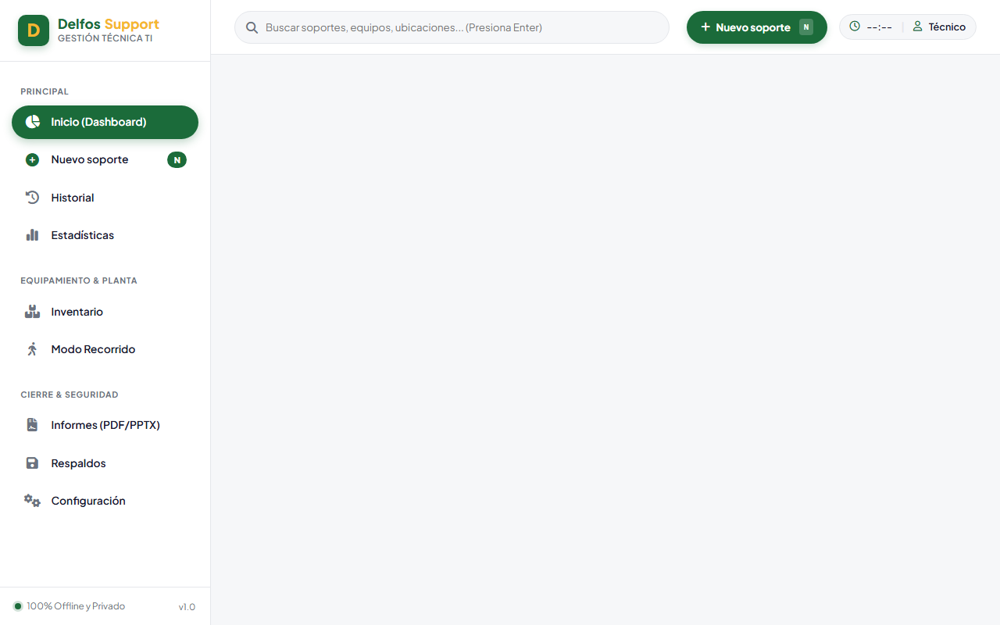
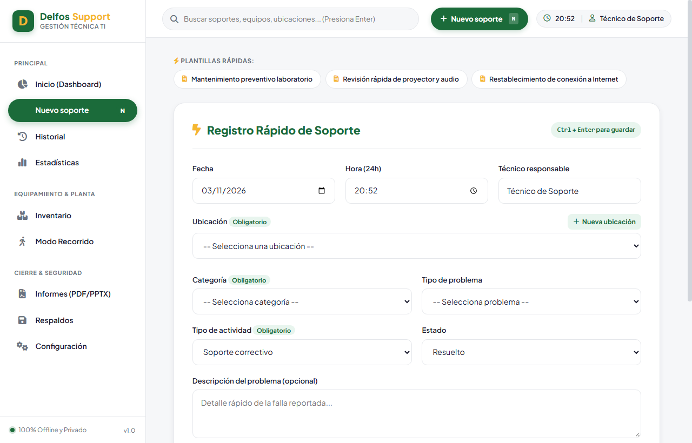
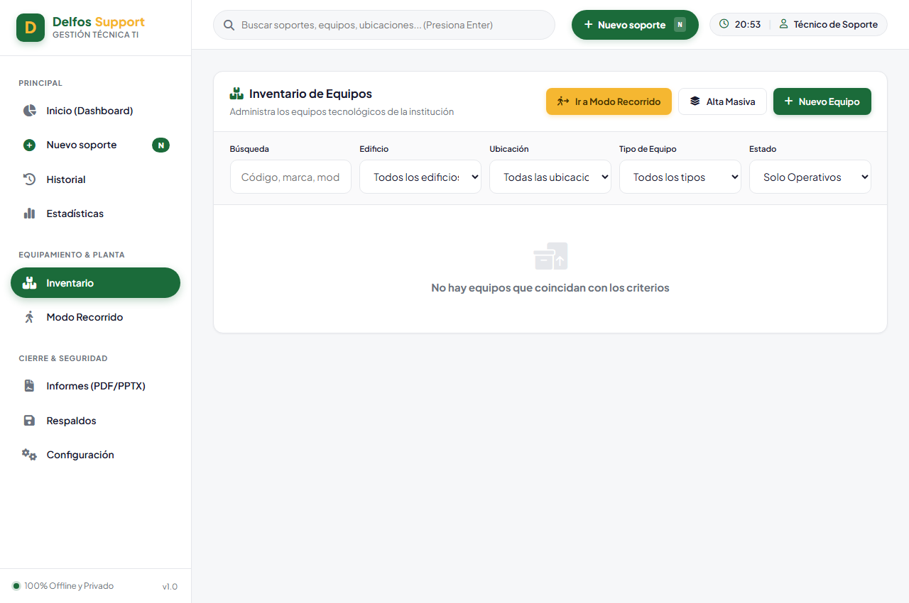
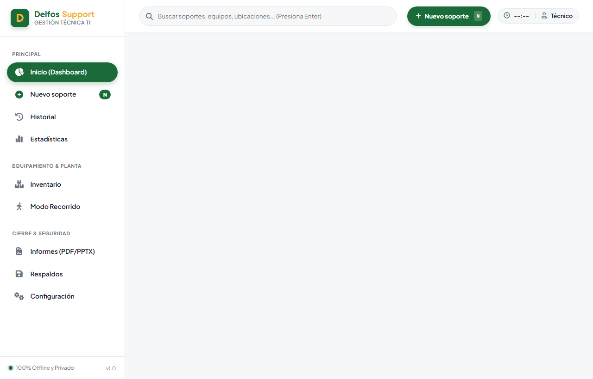
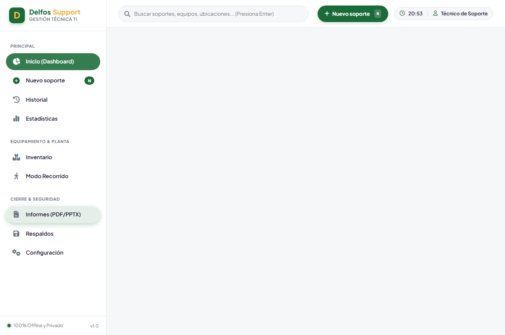
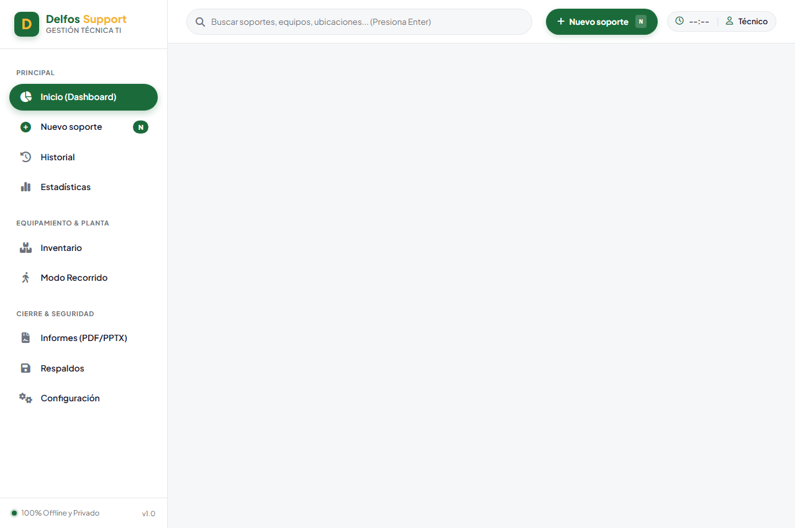

Manual de Usuario Oficial
Delfos Support
Guía integral y práctica para el registro ultrarrápido de incidencias de TI, administración de inventario físico y generación automatizada de informes mensuales y anuales.
Delfos Support está diseñado bajo una arquitectura Offline-First. Esto significa que funciona en la nube pero almacena todos los datos en la base de datos interna de tu navegador (IndexedDB). No depende de conexiones lentas de internet para guardar soportes.
https://erickmurillov30.github.io/delfos-support/
El Dashboard es la pantalla inicial. Ofrece una vista panorámica en tiempo real de todo el mes en curso:

- Banner Verde Principal: Saludo cordial, fecha actual en formato español y botón de acceso directo a "Nuevo Soporte".
- Tarjetas Métricas: Conteo automático de Soportes del mes, Mantenimientos preventivos, Instalaciones nuevas, Equipos únicos atendidos y Soportes pendientes.
- Gráficas Interactivas: Incidencias por categoría, incidencias por ubicación/edificio, y problemas más frecuentes generados por Chart.js.
- Lista de Pendientes: Sección especial para casos no cerrados con botón de un toque para Marcar Resuelto.
La pantalla más importante del sistema. Optimizada ergonómicamente para que el técnico registre una actividad y vuelva al trabajo inmediatamente.

PC-01 o PRY-01). También cuenta con el botón "Todos los equipos de esta ubicación" para mantenimientos colectivos.
El módulo de inventario te permite gestionar todos los edificios, salones, departamentos y equipos con total autonomía.

Supongamos que deseas ingresar el Salón Zeus ubicado en el Edificio Principal, el cual cuenta con 1 Proyector, 1 Computadora de escritorio y 1 Parlante / Barra de sonido.
• Nombre: Salón Zeus
• Edificio: Edificio Principal
• Tipo: Salón de clases
• Referencia: Planta Alta (o lo que aplique)
Clic en "Guardar Ubicación".
1. Eliges tipo Proyector ➔ El sistema autogenera el código correlativo
PRY-01. Seleccionas ubicación Salón Zeus y guardas.2. Repites con tipo Computadora ➔ Se genera
PC-01 asignada a Salón Zeus.3. Repites con Barra de sonido / Parlante ➔ Se genera
BAR-01.
El Modo Recorrido es una herramienta exclusiva diseñada para hacer levantamientos rápidos de inventario caminando aula por aula con tu teléfono celular:

- Entra a Modo Recorrido desde el menú.
- Selecciona Edificio: Edificio Principal.
- Escribe el nombre: Salón Zeus y tipo Salón de clases.
- Toca el botón `+` en Proyector (queda en 1), el `+` en Computadora (queda en 1) y el `+` en Barra de sonido (queda en 1).
- Toca "Guardar y siguiente salón".
¡El sistema creará la ubicación y todos los equipos con sus códigos oficiales en un solo clic!
En el Historial puedes auditar cualquier actividad realizada en la institución con filtros cruzados instantáneos.

- Filtros Simultáneos: Filtra por rango de fechas (desde/hasta), edificio, aula específica, equipo, estado (Pendiente / Resuelto) y categoría.
- Búsqueda en Vivo: Escribe cualquier palabra en el buscador libre y la tabla se filtra al instante.
- Exportar a CSV: Descarga el resultado filtrado exacto en formato CSV compatible con Microsoft Excel para análisis externo.
- Borrado Seguro con Deshacer: Si eliminas un registro por error, una notificación (toast) te da 5 segundos para deshacer la acción.
Al finalizar el mes, generar el reporte de labores para las autoridades de la institución toma menos de 1 minuto:

Genera un documento formal con membrete institucional, datos del técnico, resumen ejecutivo en prosa profesional, gráficos a color y desglose de soportes en tabla.
Crea una presentación en PowerPoint con portada, resumen gerencial, diapositivas con gráficas incrustadas, top de equipos con más fallas y conclusiones.
La seguridad de tus datos es primordial. El sistema incluye un motor completo de importación y exportación de respaldos.

delfos-respaldo-AAAA-MM-DD.json. Si cambias de computadora o formateas, simplemente vas a "Restaurar respaldo" y cargas el archivo; toda tu información reaparecerá al 100%.
| Atajo | Acción Inmediata | Contexto |
|---|---|---|
| N | Abre directamente el formulario de Nuevo Soporte | En cualquier pantalla |
| Ctrl + Enter | Guarda el soporte actual de inmediato | Dentro del formulario |
| Esc | Cierra cualquier ventana modal abierta | Modales y alertas |